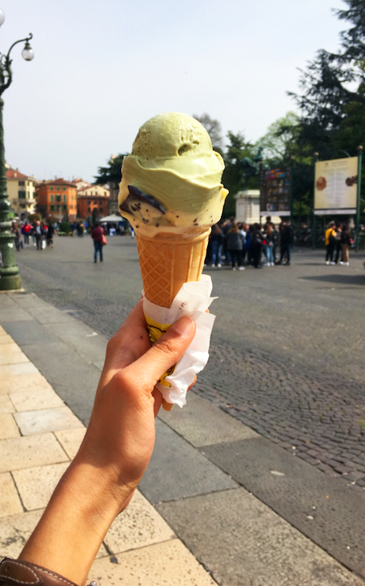
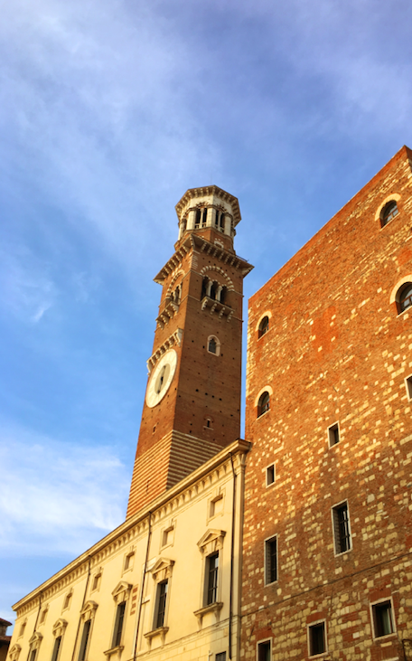
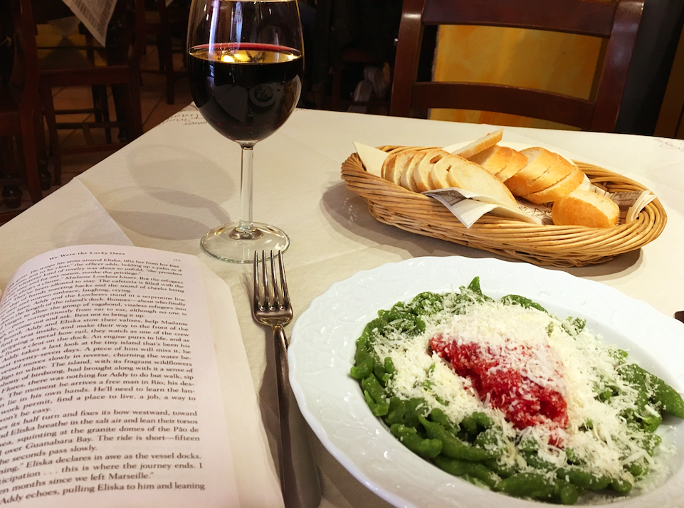
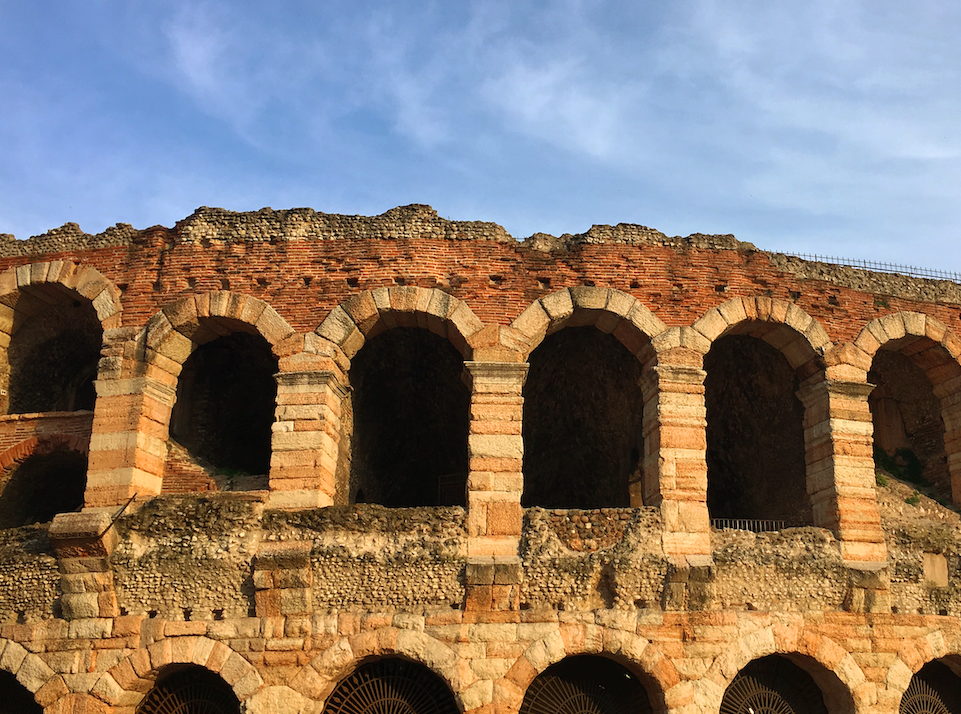

TWO DAYS IN VERONA
ITALY | BY MAYA RAO | MARCH 2019
AN ADVENTURE IN FOOD ... AND MORE FOOD
As a huge fan of both Shakespeare and pasta (and who isn't), I was stoked to finally
come to Verona (setting of the amazing Shakespeare play Romeo & Juliet as well as the movie Letters to Juliet, which
I unashamedly and unironically love), and later, I hoped, Bologna. Unfortunately, my Bologna plans didn't come through, but I had such a good
time in Verona that I don't even care. A warm, walkable, tiny town filled with the nicest people, sweetest gelato and best pasta in all of
Italy (I'm convinced), Verona is well worth your while.
DAY 1 /
Warm city, excellent pasta
1 PM /
First throughts: Verona is hot. I'm dressed in a turtleneck, dark jeans and Timbs, as an American does
in an unforgiving European March, but it is easily over 75 degrees outside. As soon as I check into my hotel, I change into the one dress I brought on this solo trip and then head straight
into the city for lunch.
2 PM /
After a lovely 20 minute walk into the city center, I debate different options for lunch, eventually eschewing real food altogether for gelato instead.
Solid choice, I must say. I also stop by a Bershka to pick up the cheapest (5€) t-shirt I can find. If it's going to be as warm here tomorrow, I need to be prepared.
5 PM /
I spent a solid three hours just wandering around aimlessly. I made a beeline to Juliet's balcony, which is a big part of the aforementioned
Letters to Juliet movie, before making my way to Castelvecchio Bridge, by far Verona's biggest landmark, where a Romanian Instagram model insisted on taking photos of me for my parents,
making sure she got #all #the #angles.
6 PM /
I'm exhausted from my six-hour bus ride and it looks like the sun is setting soon, so I embark on a quest for pasta. A TripAdvisor review convinces me that
this one to-go pasta place near Castelvecchio Bridge has the best pasta in the city, and I happily grab a cup (yes, a cup) of Pasta alla Norma to go.
7 PM /
This pasta is literally incredible. I scarf down the entire thing in about five minutes and chat with my mom about how things are going
back home. She's worried about me, since this is my first time traveling alone, but she's secretly proud, I can tell.
10 PM /
After a couple hours working on my end-of-term assignments and a couple episodes of TV, I'm ready to call it a night.

SWEET, SWEET GELATO /
A double scoop of pistachio and stracciatella gelato at a little shop just off the main town square. I still dream about this.

BUILDINGS IN THE SKY /
Verona's architecture is classically Italian.
DAY 2 /
Surprise, surprise, more pasta and gelato
8 AM /
I wake up early-ish and head down to the lobby for breakfast. So far, these European hotel breakfasts have not disappointed, and this one doesn't either. Because this is my first solo trip, and because I knew for a long time I wanted to do this solo trip, I saved up a little extra money from my job to stay at hotels, rather than AirBnBs.
Considering the fact that I planned a two-week trip with all the hotel and transportation costs under $600 (thank you easyJet and Flixbus), I feel like I didn't end up spending that much.
10 PM /
Time to head back to the city! I don't really have an agenda today, but I found a museum of Roman architecture and ruins on the very north end of the city that I want to check out. Before I start heading in that direction, though, I stop for some gelato. Yes, it's 10:00 a.m. But is there anything in the world that tastes as good as 10:00 a.m. gelato?
1 PM /
That museum was incredible! I'm a museum person anyway, but history museums (i.e. museums with ruins and artifacts) are my favorite. I didn't know that Verona had such a storied Roman-history past! I spent close to three hours in that museum and loved every second of it. Pro tip: George Ezra is the perfect museum music.
2 PM /
After leaving the museum, I headed to a tiny restaurant I found on TripAdvisor the night before. The reviews mentioned that the spinach gnocchi was amazing, so that's what I ordered. The owners of the restaurant were the nicest old couple, and they recommended a truly excellent glass of chianti to go with my lunch. I spent
an hour in the restaurant reading my solo trip book (We Were the Lucky Ones by Georgia Hunter). It was divine.
4 PM /
After two more hours of just wandering around Verona, walking along the river and through the cutest little streets (I also picked up a bottle of Limoncello for my friend, who I'm seeing in a couple days in Geneva), I found a cafe on the main square and settled into reading- and people-watching-mode. Full disclosure,
I almost got another gelato, but decided to be responsible (for once).
6 PM /
Once it started to get dark, I stopped by the same to-go pasta place and picked up a cup of cacio e pepe (also amazing). I called my mom for a few minutes (remember to call your mom and/or dad, guys!) before finishing up some work. I headed to bed at around 10:00 p.m., ready for my early morning trian tomorrow — to Milan!

PASTA LA VISTA, BABY /
Spinach gnocchi, a glass of chianti and a good book made this one of the best meals of my solo trip. I was so sad to say goodbye to Verona and to this pasta.

VERONA'S COLOSSEUM /
Nope, this isn't Rome! Verona has a colusseum, called the Arena, in the center of its town square.